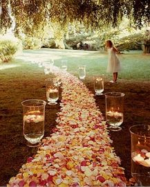

С тобою, джаным, хочу быть рядом!С тобой, мой милый, буду счастливой...Но где ты, джаным?.. Ищу тебя я...С тобой хочу быть, но мне нельзя!..
Come catch me babeI'm fallin
Come n save me babyI'm calling
Come and be with me babeCome and be with me babeCome as you are
Ты появился как первый снегКак гость незваный в моей судьбеТы мое сердце прочесть сумелСвоей любовью меня согрел
Эта улыбка, глазки и голос сердца сладкий -Не разгадать, но я люблю твои загадки.Мой мир, моя планета, мой тёплый лучик света!
Небо тает облаками,
Я иду к тебе с цветами.
Ты моя, ты любимая!
Мне так мало в жизни надо,
Мир прекрасен если рядом
Х1ун дича хир яра со хьан 1уьйре?
Х1ун дича хир яра со хьан суьйре?
Х1ун дича хир дара со хьан дуьне?
Х1ун дина кхочур яра со хьан даге?
Осень не плачет дождём, дай руку мне, так теплей.Хочешь, вместе уйдём от суеты, от людей.
Ніч яка, господи! Місячна, зоряна:Ясно, хоч голки збирай...Вийди, коханая, працею зморена,Хоч на хвилиночку в гай!
Посмотри мне в глаза.Ты прости мне, я сожалею.Я люблю тебя!Жизнь моя без тепла,Я тобой болею.Удержать не смогли,
Я разгадал твой сказочный пароль,Он был мечтою маленькой Ассоль.Хочу под алым парусом дойтиИ до твоей мечты, если любишь ты.
[як почуто]
Роскошь должна быть не в доме, а в сердце,Тихонечко жить и всех озарять.Встретив такую же роскошь – согреться,И мир вопреки всему злому менять.
Любовь не может быть с разводом,Не может быть совсем чуть-чуть.Не может по средине путьРазбить, продолжив самоходом.
Mi alma te ama,Tu eres la luz de mi primavera.De mi primavera ay ay ay,Tu no ves, tu no ves,Ay mamio mami tu ves, mi cielo mi luna,
Doar petale uscatecazute pe o carteImi spun ca tuEsti departeSi nu stii cum arde si nu stii cum doareTu nu estiUnde esti tu oare?
Тишина, где каждый звукСлышишь. Слышишь...Это танец моих рук,Он придуман для тебя.Это песня моих снов,Видишь, видишь?

Я проложу тебе из роз тропу,Возьму за руку, крепко обниму.Тебя я буду век любить,И чувство светлое ценить.А если скажешь мне: «уйду»,
Вы будьте ближе, пишите, звоните,Любите, встречайтесь, рискуйте.Друг друга всегда берегите,О страхе и гордости вы позабудьте.
Когда я слышу голос твой,То ангелы спускаются с небес.Возносят плоть и разум мой,В тот город Света и Чудес.
Белые ромашки, жёлтые сердца,Золотые чашки с кружевом венца,Нежные свиданья дарят без конца,В капельках росинок прорези кольца.